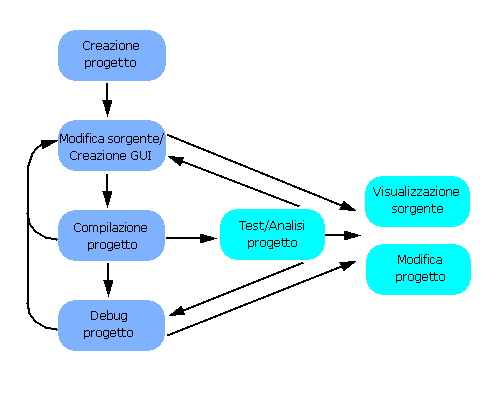

Fasi di sviluppo del progetto
Nella figura sono illustrate le fasi di sviluppo del progetto in Java Development Environment. Le fasi fondamentali sono visualizzate in colori più scuri. Per ulteriori informazioni su ciascuna fase, eseguire gli esercizi dell'esercitazione.

 Vedere anche
Vedere anche
- Terminologia di Java Development Environment